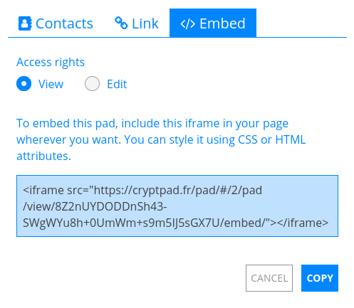
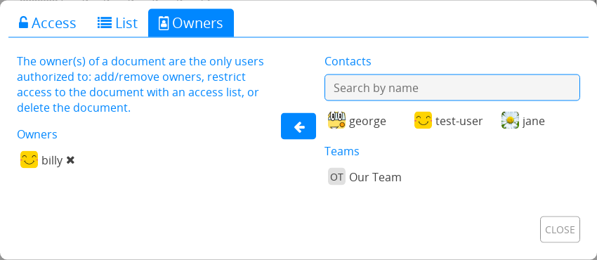

共有 / アクセス¶
共有と アクセスのメニューから、他のユーザーがCryptPadのあなたのドキュメントを操作する方法を設定できます。
ドキュメントのツールバーから：中央にある 共有と アクセス。
CryptDriveから：ドキュメントを
右クリック> 共有または アクセス。
共有¶
ドキュメントは連絡先と共有、リンクの共有、埋め込みの3つの方法で共有できます。それぞれの方法において、共有する相手にドキュメントの編集権限を与えるか、あるいは閲覧権限のみを与えるかを設定できます。
アクセス権限¶
権限には4つのレベルがあります。
View: Read-only without editing the document.
Present: Read-only the rendered output of the document, available in the コード / マークダウン and スライド applications.
編集：ドキュメントを表示、編集。
一度だけ表示した後に自動で削除：1回読み込み専用で共有。リンクを受け取った相手がリンクを開くと、ドキュメントは完全に削除されます。ログイン済ユーザー
注釈
If a document is already stored in the CryptDrive of a user with edit rights, the “edit link” is shown in the document’s properties even if the user is in View mode.
連絡先と共有¶
ログイン済ユーザー
この方法がCryptPadで安全にドキュメントを共有するのに推奨されます。連絡先と直接共有するとき、ドキュメントのリンクはCryptPadを離れることはなく、第三者にデータが流出することはありません。

連絡先とは以下の方法で共有できます。
ドキュメントのツールバーの 共有 > 連絡先。
CryptDriveのドキュメントを
右クリック> 共有 > 連絡先。
その後、
アクセス権限を選択。
共有する連絡先または連絡先を選択。
共有ボタン。
注釈
When sharing with contacts, they receive a notification. When sharing with a team, the document is added directly to the team’s CryptDrive.
埋め込み¶
埋め込みを行うとCryptPadのドキュメントをウェブページ上に表示できます。
ドキュメントは以下の方法で埋め込むことができます。
ドキュメントから：ツールバーの 共有 > 埋め込む。
CryptDriveから：ドキュメントを
右クリック> 共有 > 埋め込む。
その後
アクセス権限を選択。
埋め込み用のコードをコピー。
コードをウェブページに貼り付ける。
アクセス¶
ログイン済ユーザー
This menu is used to restrict access to a document or shared folder:
ドキュメントから： アクセス。
CryptDriveから：ドキュメントまたは共有フォルダーを
右クリック> アクセス。
アクセスのタブ¶

This tab summarises all the modalities of access to the document:
Expiration date: Date at which the document will be deleted. This date is set at the creation of the document and cannot be modified afterwards.
Password: Displays if a password has been set. A new password can be set, or an existing password modified.
Owners: List of all the document’s owners.
- Edit rights requests:Request edit rights: For users with read-only access rights.Mute access requests for this pad: Hides edit rights requests for this document. Document owners
Access list: Displays the access list and indicates if it is enabled.
完全に削除：ドキュメントを完全に破棄。
アクセスリスト¶
ドキュメントの所有者

アクセスリストでは、ドキュメントへのアクセスを制限できます。有効にすると、一覧にないユーザーは、CryptDriveにドキュメントを保存していても、それにアクセスすることはできなくなります。
To enable the access list, tick Enable access list. The owners of the document are on the list by default and cannot be removed from it.
連絡先またはチームは以下の方法で一覧に追加できます。
右側にある連絡先の一覧から選択。
ボタンでリストに追加。
To remove a user or team from the list use the button next to their name.
所有者¶
This tab is used to manage the ownership of the document. Owners of a document have the following permissions:
Enable an access list.
パスワードを有効にする。
その他の所有者を追加あるいは削除。
ドキュメントを完全に削除。
The ownership of a document is set when creating it.
注釈
If a document is created without owners, no one has permissions to manage its ownership. It cannot be permanently destroyed by anyone, but can be removed from the CryptDrive and will be destroyed automatically after 90 days of inactivity.
ドキュメントの所有者
ユーザーまたはチームは以下の方法で所有者に追加できます。
右側にある連絡先の一覧から選択。
ボタンでリストに追加。
所有者を削除するには、名前の隣にある ボタンを使用してください。